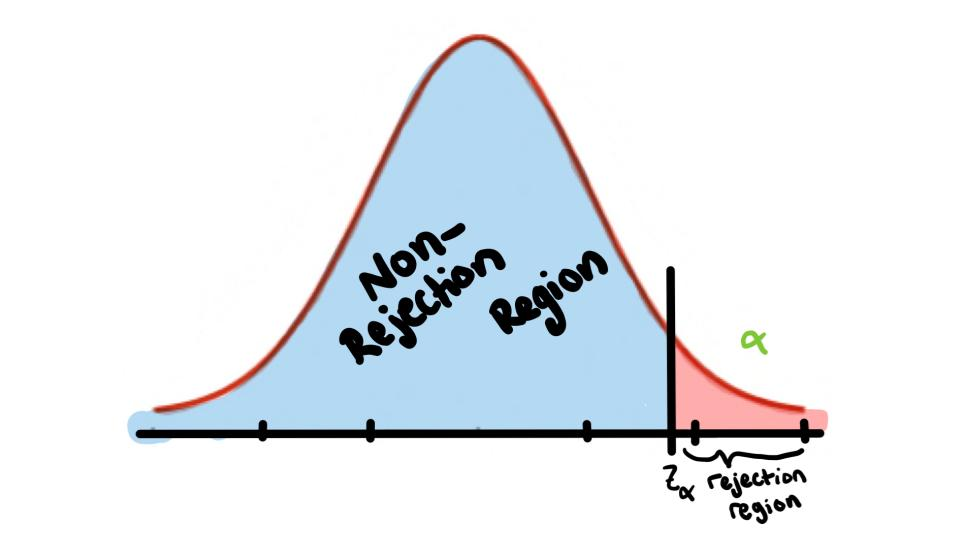

When to Reject
The Critical (rejection) Region is the range of test values that indicates that there is a significant difference and that the null hypothesis should be rejected.
The Noncritical (nonrejection) Region is the range of test values that indicates that the difference was probably due to chance and that the null hypothesis should not be rejected
The Critical Value separates the critical region from the noncritical region.
Two-Tailed Test \(H_1:\) \(\mu\neq k\)
*We Reject the null hypothesis when the test statistic falls in the critical region*
A One-Tailed Test indicates that the null hypothesis should be rejected when the test value is in the critical region on one side of the mean.
*One Tailed Tests come in two flavors Right and Left-tailed.*
Left-Tailed Test \(H_1:\) \(\mu<k\)
*We Reject the null hypothesis when the test statistic falls in the critical region*
Right-Tailed Test \(H_1:\) \(\mu>k\)

*We Reject the null hypothesis when the test statistic falls in the critical region*
Next to help you make the correct conclusions (of course I hope that by the discussion in class you can tell how to make the correct conclusions) I have provided the following table
| \(H_0\) claim | \(H_1\) claim | |
| Reject \(H_0\) | There IS enough evidence to reject the claim | There IS enough evidence to support the claim |
| Do not reject \(H_0\) | There IS NOT enough evidence to reject the claim | There IS NOT enough evidence to support the claim |